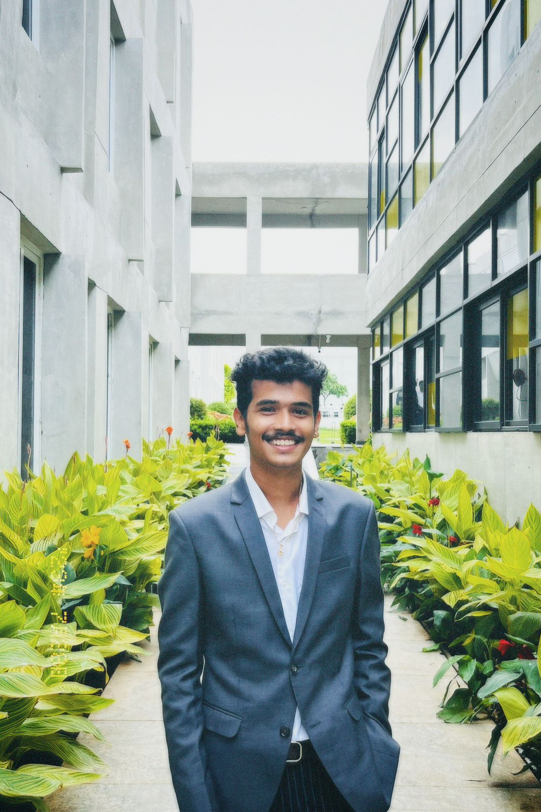

B.Tech- CSE (AI&DS)

Contact: +917780155277
Email: Jadhav.Mayur_2025@woxsen.edu.in
Address: H-No: 2-2-4/2, Devangula Street, Amalapuram, Dist-Dr B. R. Ambedkar Konaseema, Andhra Pradesh, 533201
LinkedIn: Mayur Jadhav
I am an organized and hardworking data science student with a genuine passion for technology and a drive to gain practical experience to complement my theoretical knowledge. Through my studies, I have established a strong foundation in technology, providing me with a solid base to build upon. Continual learning and personal development are paramount to me.
Woxsen University | Hyderabad 2021 - 2025 | Bachelor of Technology
Aditya Junior College | Amalapuram 2018 - 2021 | Intermediate
Mother Teresa High School | Amalapuram, India 2009 - 2018 | Schooling
June-2023 to July 2023
SVSS | Bijapur, Karnataka
Societal Internship: We did an internship under the NGO called "Swami Vivekananda Seva Sang" to which we contributed 6 weeks. We worked with 3 schools through the NGO and taught them about ethical values. In the technical part, we created a website for students, schools, and NGOs through which they can communicate with each other.
2023-06 | Python for Data Science & AI
2023-07 | Database and SQL by IBM
2023-08 | Data Analytics and Visualization using Python